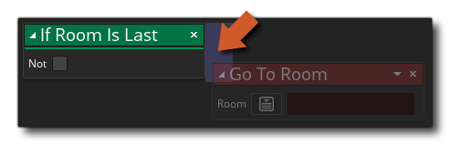

Cette action vérifiera si la pièce actuelle est la dernière pièce répertoriée dans l'arborescence des ressources. L'action retournera true si la pièce actuelle est la dernière dans l'arborescence des ressources et false si ce n'est pas le cas. Vous pouvez marquer la case à cocher non pour le transformer en "si la pièce n'est pas dernière".
Notez que pour ajouter des actions dans le bloc "if", elles doivent être placées sur le côté de l'action, comme indiqué dans l'image ci-dessous:
Ces actions seront maintenant exécutées si le "si" évalue à true, tandis que toutes les actions abandonnées ailleurs seront effectuées après le bloc "if".
Le code de bloc d'action ci-dessus vérifie si la pièce actuelle n'est pas la dernière répertoriée dans l'arborescence des ressources. Si ce n'est pas le cas, le jeu ira à la pièce suivante dans l'arbre des ressources, sinon il ira à une pièce spécifique.